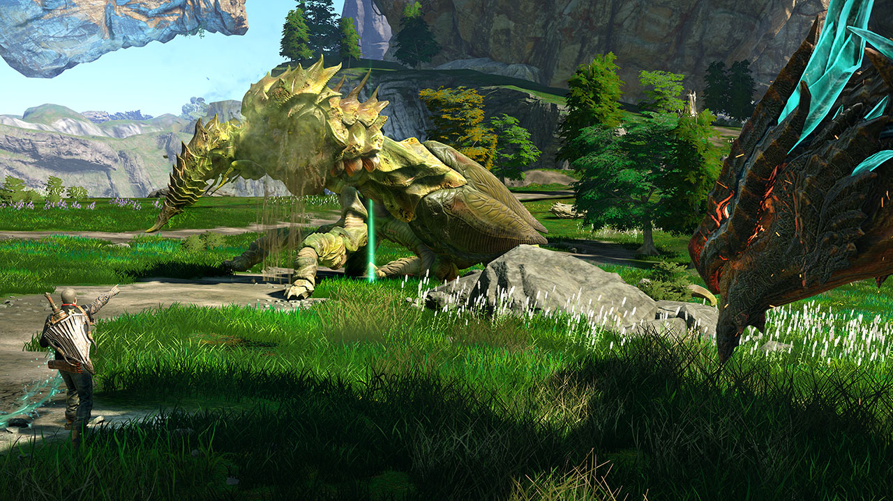
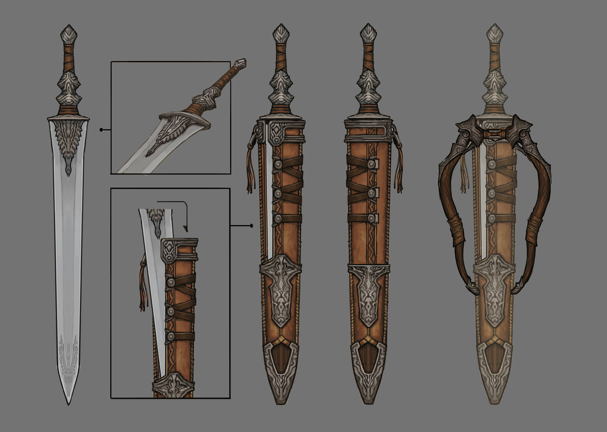
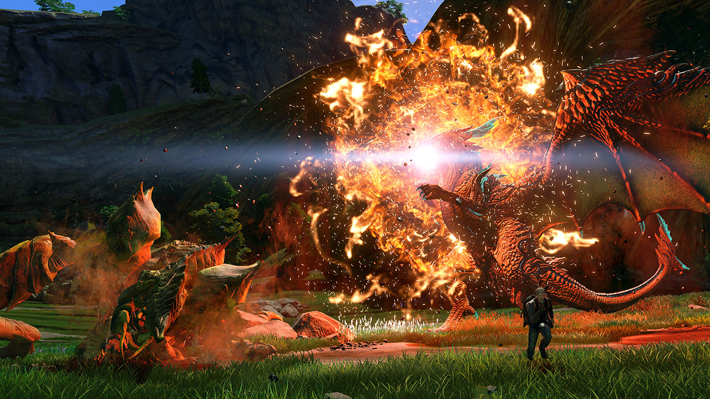

Scalebound: Platinum Action With Deep RPG Systems – IGN First
Dragon customization, skill points, and more.
By Lucy O'Brien
Traditionally, Platinum Games has been in the business of comically over-the-top action, the knuckle-breaking, hand-cramping, every-sliver-of-a-second-counts kind. It’s good business, too; Platinum has built such a strong portfolio in the last several years it’s become something of an ‘action whisperer’ for publishers looking to reinvigorate their franchises.
But the studio is moving away from the tried and tested in its latest game, Scalebound. Hideki Kamiya’s passion project is an action-RPG, and a much bigger proposition than anything Platinum has produced before. “It’s not a classic Platinum game where it’s like ‘stage 1 clear enemy, boss battle, move to stage 2,” says game designer Yusuke Miyata, from Platinum Games’ studio in Osaka, Japan. “It’s not a game where you’re going to see a linear progression. So the setting and foundation of this game is very different to what we’ve created before.”
Platinum is promising that the island of Draconis will be full of “tons of combat and exploration.” “Non-linear” is the term being used in place of “open-world” - Draconis is not a sandbox - though protagonist Drew and his dragon companion Thuban will need to continually upskill in order to traverse its vast terrain.
For the player, this means management of two separate - but easily learned - systems. Drew levels up through battle: every time he or Thuban defeats an enemy, he’ll earn a skill point. These can be chained by defeating a second enemy within a timed period, which will give you some sort of bonus on top of what you’ve already gained. “If you pace your combat in the right way,” explains Kamiya, “if you're successful at consecutively defeating the enemies, the longer that chain will last.”

Skill points can also be gained outside of combat. Scalebound is built around the relationship between Drew and Thuban, so you will be rewarded for taking care of that relationship. “If you heal your dragon, or execute other supportive role-type actions, you’ll be able to earn skill points,” says Kamiya. “By motivating the player to participate in actions and behaviours that are meaningful, it will… help you progress further”.
Although Drew’s arsenal seems in step with Platinum’s usual power fantasies (think swords bigger than Drew’s body), weapon management is more of a focus. There is no crafting system in Scalebound, but a wide variety of weapons - some with elemental properties, like fire and ice - will be available for Drew to play with. “By picking up and unlocking weapons,” says Kamiya, “you collect all these different types, but maybe you’ll lean towards certain types.”
Weapons will degenerate with use. But Kamiya explains that there’s a chance, right before your weapon breaks, to revive some of the durability you lost during combat. “So it’s not just durability - top to bottom then you toss it away - you’ll get a chance to do some maintenance work on it.”
While Platinum didn’t go into great detail on how you’ll obtain weapons and armour, we were treated to a brief glimpse of one of the villages in Draconis. These will serve as traditional RPG hubs, so here you’ll be able to rest, speak to NPCs, deal with your loadout, and buy items with in-game currency. The one we saw was quite rustic - villagers wore simple clothing, woven from natural materials - but Platinum promises this is just one of many villages in Draconis, all of which have a different aesthetic.
“It’s really big,” says Kamiya, as Drew walks through the village that stretches off into the distance. “It just keeps going.”

Concept art from Scalebound.
Making Your Dragon, Your Dragon
For all you can upskill Drew, he remains a fairly static character in comparison to his dragon companion. The evolution of Thuban is a core focus for Platinum, so that every player has a buddy that feels distinctively theirs. “When you think about what makes something yours,” says Scalebound’s Creative Producer Jean Pierre Kellams. “It’s your investment in the thing. The more you invest in that dragon and in your relationship with that dragon, the more that dragon becomes yours.”
Gems are used to upgrade Thuban, and these are primarily acquired after defeating an enemy in battle. But Drew is the only character to wield the energy of Draconis - “The Pulse” power - in Scalebound, so he must deal the finishing blow in order to collect them. “You want to make sure you take advantage of… Drew’s skills as well,” explains Kamiya. “Say Thuban goes up against some smaller creatures, and he is so strong and powerful that a single fire breath could completely destroy the few enemies standing right in front of Drew, but that means that you’ve just missed an opportunity to take it into your own hands and pick up those gems.”
We only got a brief glimpse at Thuban’s customisation screen, but it’s clear you can customise the dragon from head to toe. Horns, tail, knuckles, wings, armour, breath, skin were all able to be swapped out and played with, while armour can also be equipped. As Thuban is as an independent character - one who will obey your commands but whose sophisticated AI will react to situations accordingly - the decisions you make in this screen are crucial.
“How do I want my dragon to behave and will this be advantageous for me for the next battle?” says Miyata. “You’ve got to look at the situation that you’re in and assess.”

The idea is to slowly and surely build your “ideal Thuban” based on your fighting style, and, just as importantly, your aesthetic tastes. “Look at the different skins,” says Kellams. “The skins are just aesthetic, you change the skin because you want that dragon to look that way. It’s a personal choice, like the watch or the clothes you wear. And the way you can choose how your dragon acts - ‘I want my dragon to do THIS,’ and then to watch him do that, is such an awesome reward for player investment that’s unique to RPGs.”
Scales, As Opposed to Scaling
The enemies Drew and Thuban face off against in Draconis will not scale up alongside Drew. The player should be allowed a sense of victory, says Kamiya, so returning to areas as a stronger team is rewarded. “If you scale up… you don’t get that opportunity to reward the player in terms of, ‘oh my gosh, I got to this point and was able to defeat this enemy in one attack or one blow.’ So, I want the players to have that kind of experience, where it's like, you know how hard you worked, and this is kind of a big payoff for you.”
But to add a little more vibrancy to the world of Draconis, enemies won’t always behave in the same way. Weak points might be in a different location on a giant mantis you’d previously battled, for example, or an entirely different creature might be there in its place. “There’s a discovery element to it,” says Kamiya. “Even though you think you know it all, you don't. We’re really challenging the player to figure things out.”
As we near the end of our conversation, Kamiya was keen to stress that although these RPG elements are indeed a departure for the studio, it doesn’t mean he’s neglecting the slick, frantic action Platinum is known for.
“Even though I know we've been emphasising that this is an action RPG, because I need to get that message across - I hope you agree that we know how to make action games. We know how the responsiveness of a move is what really differentiates our games from other action games. That's what's so special about our games, whether it's Bayonetta or my previous title Devil May Cry. So one thing that's not going to change is that how great it feels when Drew is in battle. You're not going to feel like it's worse than what we've done before. The sort of intuitiveness and the response to the action that Drew is taking? That will remain at the quality that’s always defined our action games.”
Concept art from Scalebound.
Lucy O'Brien is Entertainment Editor at IGN’s AU office. Follow her ramblings on Twitter.

{kind=link}
{kind=link}